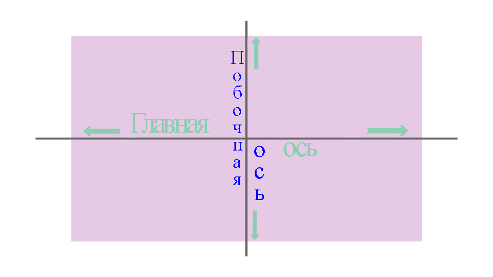

.png)


Основные понятия FlexBox
CSS модуль раскладки Flexible Box, обычно называемый флексбокс или flexbox или просто flex (флекс), был разработан как модель одномерного-направленного макета и как один из методов распределения пространства между элементами в интерфейсе, с мощными возможностями выравнивания. В этой главе дается краткое описание основных функций flexbox, которые мы рассмотрим более подробно в остальных руководствах.
Когда мы описываем flexbox как одномерно-направленный, мы имеем в виду, что flexbox имеет дело с макетом в одной плоскости за раз – либо в виде строки, либо в виде столбца. Как альтернативу можно упомянуть двумерную модель CSS Grid Layout, которая управляет и столбцами и строками одновременно.
Главная ось
Главная ось определяется свойством
- row
- row-reverse
- column
- column-reverse
Если вы выберете

Если вы выберете

Побочная ось
Побочная ось проходит перпендикулярно главной оси, поэтому, если свойство

Если свойство

Понимание того, с какой осью вы работаете (главная или побочная) очень важно для дальнейшего изучения Flexbox.
Начало и конец строки
Важно понимать, что flexbox не делает никаких предположений о режиме написания документа. Раньше CSS был сильно ориентирован на горизонтальный режим и режим письма слева направо. Современные методы верстки охватывают полный диапазон режимов письма, и поэтому мы больше не предполагаем, что строка текста будет начинаться в верхнем левом углу документа и будет проходить по направлению к правой стороне, а новые строки будут появляться одна под другой.
Если свойству

Если бы вы работаете с арабским языком, то начало главной оси будет справа, а конец главной оси – слева.

В обоих случаях начало побочной оси находится вверху flex контейнера, а конец – внизу, поскольку оба языка имеют режим горизонтальной записи. Спустя некоторое время становится естественным думать о начале и конце оси, а не о левом и правом краях. Это будет полезно для вас при работе с другими методами, такими как CSS Grid Layout, которые следуют тем же шаблонам.